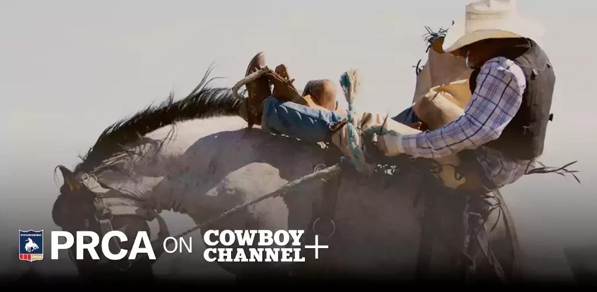
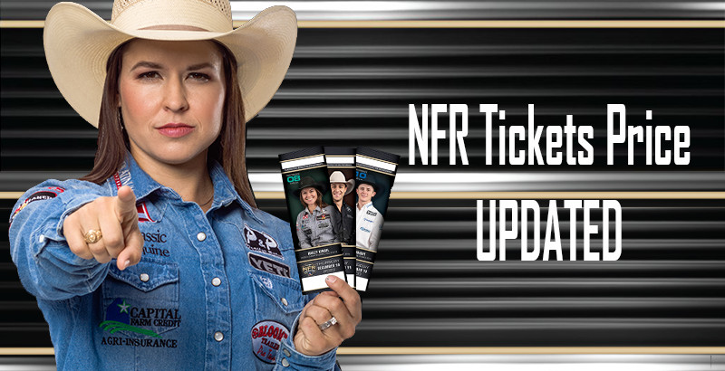
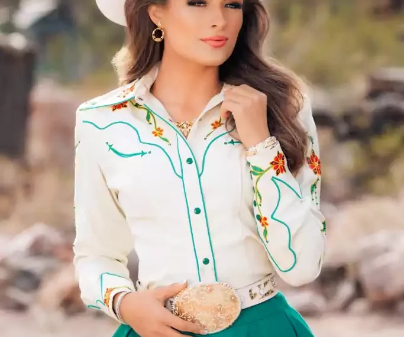
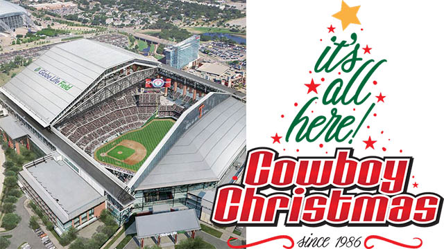
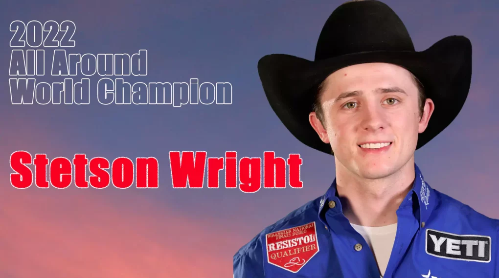

The NFR is back in Vegas! When talking about 2023 Rodeo is basically refers to an annual National Finals Rodeo event. The 2023 Wrangler National Finals Rodeo (NFR) is scheduled to take place from December 7 to 16 at the Thomas & Mack Center in Las Vegas, Nevada. This premier championship rodeo event in the United States brings together the top 15 contestants in seven rodeo events: bareback riding, steer wrestling, team roping, saddle bronc riding, tie-down roping, barrel racing, and bull riding.
The NFR consists of ten rounds of competition, with each contestant participating in one event each night. The overall world champion in each event is crowned at the end of the ten days, based on their cumulative scores from all ten rounds.
| Venue | Thomas & Mack Center, Las Vegas, NV, United States |
| Start Date | Thursday, 7th December 2023 |
| End Date | Saturday, 16th December 2023 |
| Broadcast | The Cowboy Channel |
So, don???t miss a single moment of the Wrangler NFR live action. Don???t worry, If you can???t attend in NFR Las Vegas, we???ll discuss here how to watch National Finals Rodeo online real-time TV coverage.
When is the??National Finals Rodeo?
Mark your calendars for December 7-16, 2023, and witness the world???s top rodeo athletes showcase their skills at the Thomas & Mack Center in Las Vegas, Nevada. The NFR is a celebration of Western heritage and tradition, and it???s an unforgettable experience for rodeo enthusiasts of all ages. Don???t miss out on the chance to witness the culmination of the PRCA season and see who will be crowned the world champion in each event. Secure your tickets today and experience the thrill of the NFR live or online. See complete NFR schedule page.
Where will the NFR Las Vegas 2023 be held?
The 2023 Wrangler National Finals Rodeo (NFR) will take place at the Thomas & Mack Center in Las Vegas, Nevada. The event will be held from December 7 to 16, 2023. The Thomas & Mack Center is a multi-purpose arena located on the campus of the University of Nevada, Las Vegas. It has a capacity of 18,796 people and is home to the UNLV Runnin??? Rebels men???s basketball team. The NFR has been held in Las Vegas since 1985.
What TV Channel will the NFR be on?
The 2023 Wrangler National Finals Rodeo (NFR) will be broadcast live on The Cowboy Channel and RFD-TV. The Cowboy Channel is the official television partner of the Professional Rodeo Cowboys Association (PRCA) and has exclusive rights to broadcast the NFR. RFD-TV is a sister network to The Cowboy Channel and will also be airing the NFR live.
Coverage of the NFR will begin each night at 5:45 p.m. PST/8:45 p.m. EST and will continue for three hours. In addition to the live rodeo competition, The Cowboy Channel and RFD-TV will also air NFR-related programming, including interviews with rodeo athletes, behind-the-scenes footage, and historical highlights.
How to watch NFR Live Stream 2023 Online
The Wrangler NFR is a 10-day event that includes the fan-favorite Cowboy Christmas as well as the PRCA National Convention. The schedule also includes nightly Buckle Presentations, Benny Binion???s World Famous Wrangler NFR Bucking Horse Sale, the PRCA Awards Banquet and Gala also the Pro Rodeo League of Women Style Show and Luncheon. All performances will be covered by The Cowboy Channel live and simulcast on RFD-TV. Wrangler National Finals Rodeo (NFR) move to The Cowboy Channel (TCC) and RFD-TV beginning in 2020. The performances will also be streamed on the PRCA on Cowboy Channel Plus app. The PRCA on Cowboy Channel Plus app users will be able to stream events both live and recorded.
The Cowboys Channel
The ultimate annual rodeo event will now be seen by millions of people live simultaneously on two national TV networks. Also included in the deal is a wide variety of other PRCA programming, including expanded live coverage of the PRORODEO TOUR and the PRCA???s Xtreme Bulls Tour events which will result in a huge increase in the amount, availability and quality of PRCA PRORODEO coverage on The Cowboy Channel here. The Cowboy Channel now available on Dish Network-232, Direct TV-603, Cox-260 anytime, and anywhere. You can enjoy Rural Media on these platforms:
- AT&T (Channel 568 & 1568)
- Charter Spectrum
- Comcast
- Cox
- DIRECTV (Channel 345)
- DIRECTV NOW
- DISH (Channel 231)
- Mediacom
- Sling TV???s Heartland Package
- Suddenlink
To find out if RFD-TV and The Cowboy Channel are available in your area, please click here and enter your zip code also choose your Pay TV provider.
PRCA on The Cowboy Channel+ App
The PRCA on The Cowboy Channel+ App will keep fans up-to-date with their favorite PRCA rodeos and athletes, as well as provide behind-the-scenes access to Wrangler NFR livestreamed and on demand PRCA rodeo events from around the country. The content can be accessed via the mobile app (available on Android and iOS), as well as any browser, smart TV or device. Viewers will be able to enjoy free access to up-to-the-minute news, bios, rodeos and highlights. Those with a subscription will unlock premium content such as up to six simultaneous live rodeo feeds, classic PRCA archived rodeos, The Cowboy Channel video-on-demand programming, and the only place viewers can stream the National Finals Rodeo (NFR). The Cowboy Channel+ is available for only $9.99 a month or save up to 25% and purchase the whole year for $89.99. To sign up for the PRCA on The Cowboy Channel+ App, visit www.cowboychannelplus.com.

Wrangler Network
The Wrangler Network made its official release in 2014 for those who live and love the Western lifestyle. The Wrangler Network offers live coverage of rodeos from across the United States along with highlights and statistics from bull-riding competitions and other events. In addition to live streaming rodeos, there are many other exciting and unique events you can find on the Wrangler Network including:
- Documentaries
- Concerts
- Cowboy-Mounted Shooting Contests
If you???re wanting to take a look at live streaming rodeo events, listen to your favorite country song simply log on to www.wranglernetwork.com from your desktop, laptop or mobile device.
RFD-TV Now
RFD-TV Now delivers both real-time NFR 2023 LIVE programming as well as an expansive on-demand library with access to more than 90 shows such as Hee Haw, Opry Encore, The Best of the Marty Stuart Show, Ag PHD, and FarmHer, as well as daily broadcasts of Market Day Report and Rural Evening News. RFD-TV Now is available on a huge lineup of streaming players and devices including Roku players, Roku TVs, and Amazon???s Fire TV. RFD-TV Now costs $9.99 a month or $89.99 a year.
Supported platforms
Can I watch RFD-TV on Roku, Fire TV, Apple TV, or Chromecast? Yes! you can here is the complete list:
- Android 4.4+
- Android TV 5.0+
- Apple TV 9.0+
- Amazon Fire TV
- Fire TV Stick 4K
- IOS 9.0+
- Roku
- Web: Chrome, Firefox, IE11, Edge

Sling TV
Sling TV includes Cowboy Channel as part of their Sling Orange Heartland Extra package for $46 a month. Sling TV has 30 channels as part of their plan, including A&E, AMC, BET, Bravo, Cartoon Network, CNN, Comedy Central, Discovery, Disney Channel, E!, ESPN, Food Network, Fox News, Freeform, FX, HGTV, History, Investigation Discovery, Lifetime, MSNBC, Paramount Network, Syfy, TBS, TLC, TNT, Travel Channel, truTV, and USA Network.
This is the full Sling TV Channel List.
Every Sling TV subscriber can record to their 10 hours Cloud DVR, while 3 users can stream at the same time.
Supported platforms
Sling TV supports a wide-range of devices to stream including Amazon Fire TV, Apple TV, Google Chromecast, Roku, iPhone/iPad, Web Browsers, Android Phone/Tablet, Android TV, Xbox, Samsung Smart TV, LG Smart TV, and VIZIO Smart TV. Sling TV is not available to stream on PlayStation and Nintendo.
2023 NFR Live Stream Using a VPN
Sling TV is only available to residents of the United States. Even viewers located in our neighbor to the north, Canada, cannot access the Sling TV service. In these situations, a reliable and encrypted VPN (Virtual Private Network) can prove to be helpful. A VPN will allow an individual to remotely connect to a server located in a different country that allows the desired website viewing to take place. The following VPNs can prove to be very useful:
-
ExpressVPN
- This source offers a selection of servers that spans over 90 countries. Currently, they offer monthly ($12.95/month), semi-annual ($59.95/6-months), and annual ($99.95) plans. Included with each plan is the offer of a 30-day money back guarantee in the event that a user is dissatisfied.
-
IPVanish
- The offering from this source includes servers that span over 60 countries. The current subscription plans consist of monthly ($10/month), quarterly ($26.99/3-months), and annual ($77.99/year) options. Included with each plan is the offer of a 7-day money back guarantee in the event that a user is dissatisfied.
-
NordVPN
- While maintaining a selection of servers that spans over 60 countries, this VPN source currently has subscription plans that consist of monthly ($11.95/month), semi-annual ($54/6-months), annual ($83.88/year), and bi-annual ($95.75/2-years) options.
Once you have connected to US??? Fastest server, the Sling website will instantly be accessible to you. Simply subscribe to Sling Live TV service and enjoy live streaming of all your favorite TV channels right at home!

Can I listen to NFR 2023 live stream on radio?
This season, you can hear daily from the ten days of the Wrangler NFR, scheduled for Dec. 7-16 (find an affiliate near you), as well as on SiriusXM serving rural America and Canada and is available to more than 34 million vehicles and homes. RURAL RADIO also offers a broad slate of Western sports programming year-round featuring Western Sports Roundup and coverage of WPCA and PRCA events.
Launched in March 2019 under the theme of ???All Dirt, All Rodeo, All Year,??? NFR Extra follows current and former rodeo contestants, country music performers, stock contractors, rodeo industry insiders and more. New episodes are released weekly with the plan to broadcast daily from the ten days of the Wrangler NFR, scheduled for Dec. 7-16. If not listening on RURAL RADIO Channel 147 on SiriusXM, NFR Extra can be accessed at NFRexperience.com or on Spotify, Apple Podcast, iHeart or anywhere fans like to listen.
Wrangler NFR Live Online on Social Media
One increasingly popular method of viewing NFR live stream comes in the form of social media viewing. The way this typically works is through an individual using their mobile device to live stream the event to a social media platform of their choosing. The most popular platforms for this method are as follows:
-
YouTube
The most popular video-sharing site on the planet has historically built its name upon uploaded videos. However, the site now allows live-streaming capabilities, making it perfect for free viewing of live events such as NFR, as long as a streaming user can be found.
-
Facebook
Various individual accounts or pages are bound to be streaming the National Finals Rodeo events. Interested individuals will have to search for these opportunities throughout the platform as it gets closer to the festivities.
-
Twitter
This platform has increasingly become the go-to place for action as it happens in real-time. That makes it a prime destination when searching for all things related to NFR. A quick search bar or hashtag follow will almost assuredly lead to the discovery someone streaming the NFR.
-
Reddit
Mainly known as a news aggregation site, this platform has increasingly become a well-known discussion forum hub. Within those forums, there is undoubtedly discussion concerning how to watch the NFR live stream on Reddit.

How much are tickets to the NFR?
Ticket prices for the National Finals Rodeo (NFR) vary depending on the performance date, seating location, and ticket broker. However, as a general rule of thumb, you can expect to pay anywhere from $70 to $500 per ticket.
Here is a breakdown of ticket prices for the 2023 NFR:
- General public tickets: $70 to $380
- Suite tickets: $1,000 to $5,000
You can purchase tickets for the NFR online through the official NFR website, by phone through the NFR ticket office, or from various ticket brokers.
Here are some tips for getting the best deals on NFR tickets:
- Purchase your tickets in advance. Ticket prices tend to go up as the NFR gets closer.
- Be flexible with your seating location. If you are willing to sit in the upper level of the arena, you can usually find tickets for cheaper.
- Consider purchasing a ticket package. Ticket packages can sometimes save you money on individual tickets.
Check with local businesses and organizations. Many local businesses and organizations offer discounted tickets to the NFR.
Everything You Need to Know About NFR
Beyond the payouts for the Cowboys, the PRCA estimates that the event brings in about??$90 million annually to the Las Vegas economy. Furthermore, recent attendance stats have shown that??177,565 rodeo enthusiasts decked out in Wrangler jeans, Justin boots and cowboy hats attended events at the Thomas & Mack with an additional 40,000 fans who watched at the 40 hotels who hosted watch parties. It is during this rare time of the year that many marquees on the Strip have the face of bull riders replace DJs??? faces.
Main Performance
Seven main events have historically taken place at the NFR. Each event has its own monetary prizes that are paid out, and those payouts are determined by each top-placing competitor???s rank in relation to the event???s overall prize pool. Individuals placed in the top-six of a particular event are paid out accordingly, while individuals placed in the top-eight of the overall NFR are also paid out. The NFR???s main events are as follows:
-
-
Bareback Riding
This consists of a horseback cowboy using a bareback rigging as the primary means of staying on top of the horse. This grip has often been compared to the equivalent of hanging on to a suitcase handle and makes for the only support that a cowboy has on top of the wildly bucking horse. An 8-second ride constitutes a qualified ride and the cowboys is judged on riding technique.
-
Steer Wrestling
This act involves a horseback steer wrestler, alternatively known as a ???bulldogger???, bringing a fast-moving steer to a halt on its back as fast as possible. The bulldogger utilizes a combination of strength, technique, speed, and precision to jump off of their horse from a designated starting point and onto a steer sprinting off from the same starting point.
-
Team Roping
-
-
Headers
One of two horseback team members whose job is to successfully rope the head of the steer in one of three tries as fast as possible; around both horns, around one horn and the head, or around the neck.
-
Heelers
One of two horseback team members whose job is to successfully rope the hind legs of the steer as soon as the header has successfully done their part. To avoid a 5-second penalty for roping only one hind leg, the heeler must rope both hind legs.
-
-
-
Saddle Bron Riding
Similar to Bareback Riding, the goal of the horseback cowboy is to maintain their balance as much as possible for 8 seconds while the horse is bucking. In this event, however, the cowboy sits on a saddle while using one hand to hold on to a thick rein that???s attached to the horse???s halter.
-
-
Tie-Down Roping
This event centers around a cowboy on horseback attempting to restrain a calf by throwing a well-timed rope loop that???s attached to the cowboy???s horse. The cowboy and the calf both leave from a designated starting point, with the calf getting a slight head-start. The cowboy depends on the horse to mitigate any slack in the rope after dismounting, then proceeds to tie-up the calf as fast as possible.
-
Barrel Racing
This is a women???s event where horseback cowgirls race against the clock to complete a strategically set course where barrels are set up as landmarks. The intent is for the cowgirls to complete a cloverleaf-shaped run around 3 barrels placed in a triangular formation as fast as possible. Barrels that are accidentally knocked over result in 5-second penalties.
-
Bull Riding
The cowboy on top of the bull has the main objective of staying on top and maintaining their balance for 8 seconds. They are judged based on technique and can earn extra points by spurring while the bull is bucking. The cowboy stays on top of the bull by grasping a flat braided rope, which also wraps around the bull???s chest.
-
All-Around Champion
Being crowned the All-Around Champion speaks volumes about the versatility and high level of talent exhibited by the winning cowboy. ??In order to receive this honor, the cowboy must have won the most prize money in a given year and competed in at least 2 NFR events while earning at least $3,000 in each of those events. This is widely known as the highest honor bestowed by the PRCA.
Contestants
There are 120 cowboys from all over the United States that will step foot as competitors within the NFR. A full list of the contestants can be found on the event???s??Contestant Roster??page. The top 10 ranked competitors are as follows:
- Stetson Wright, Milford, UT ??? Saddle Bronc Riding
- Shane Hanchey, Sulphur, LA ??? Tie-Down Roping
- Ryder Wright, Beaver, UT ??? Saddle Bronc Riding
- Sage Kimzey, Salado, TX ??? Bull Riding
- Tilden Hooper, Carthage, TX ??? Bareback Riding
- Dustin Egusquiza, Marianna, FL ??? Team Roping (Headers)
- Junior Nogueira, Presidente Prudente, Brazil ??? Team Roping (Heelers)
- Paden Bray, Stephenville, TX ??? Team Roping (Heelers)
- Tim O???Connell, Zwingle, IA ??? Bareback Riding
- Travis Graves, Jay, OK ??? Team Roping (Heelers)
NFR Stock Roster
The 2023 Wrangler National Finals Stock Roster is listed below. It is subject to change.
For a downloadable pdf version, click the link below.
- Bareback Horses (PDF)
- Saddle Bronc Horses (PDF)
- Bulls (PDF)
Super Bowl of Rodeo
The National Finals Rodeo (NFR) is widely regarded as the ???Super Bowl of Rodeo???. It is the premier championship event in the world of professional rodeo, bringing together the top 15 contestants in seven rodeo events: bareback riding, steer wrestling, team roping, saddle bronc riding, tie-down roping, barrel racing, and bull riding. The NFR is held annually in Las Vegas, Nevada, and is a must-see event for any rodeo enthusiast.
Here are some of the reasons why the NFR is considered the ???Super Bowl of Rodeo???:
- Prestige: The NFR is the most prestigious rodeo event in the world, and winning a world championship title at the NFR is the ultimate goal for any professional rodeo athlete.
- Competition: The NFR features the best rodeo athletes in the world, and the competition is incredibly fierce.
- Excitement: The NFR is an incredibly exciting event, with plenty of thrills and spills.
- Tradition: The NFR has been held annually since 1959, and it is a deeply ingrained tradition in the world of rodeo.
- Entertainment: The NFR is not just a rodeo competition; it is also a major entertainment event. The NFR features a variety of entertainment acts, including concerts, dance performances, and comedy shows.
If you are a fan of rodeo or Western culture, then you should definitely make plans to attend the NFR at least once in your lifetime. It is an unforgettable experience that you will never forget.

Kennadee Riggs
Miss Rodeo America
Miss Rodeo America is an annual pageant held in conjunction with the Wrangler National Finals Rodeo (NFR) in Las Vegas, Nevada. The pageant is open to young women between the ages of 18 and 26 who are currently reigning state rodeo queens. The contestants are judged on their appearance, horsemanship, and personality. The winner of the pageant is crowned Miss Rodeo America and serves as the official ambassador of the PRCA and the NFR.
Miss Rodeo America 2023
The current Miss Rodeo America is Kennadee Riggs, a 22-year-old from Queen Creek, Arizona. Kennadee is a passionate advocate for the Western lifestyle and agriculture. She is also the founder of The Kindness Journal Podcast, which encourages people to perform acts of kindness in their everyday lives.
Responsibilities of Miss Rodeo America
Miss Rodeo America has many responsibilities during her reign. She travels approximately 40,000 miles and appears at nearly 150 rodeo performances, schools, civic groups, and other special events. She also makes media appearances and participates in various PRCA initiatives.
Benefits of Participating in the Miss Rodeo America Pageant
Participating in the Miss Rodeo America Pageant can provide young women with many benefits, including:
- Developing leadership skills
- Gaining public speaking experience
- Learning about the Western lifestyle and agriculture
- Making lifelong friendships
- Earning scholarships for college
The Miss Rodeo America Pageant is a prestigious event that celebrates the best of the Western lifestyle. It is a valuable opportunity for young women to showcase their talents and abilities, and to make a positive impact on the world.
2023 Pageant Dates
This year???s pageant to select the 2023 Miss Rodeo America are scheduled for Sunday, December 4th, 2023 at the South Point Hotel in Las Vegas, Nevada.
A full schedule and hotel information is available here.
To purchase tickets, contestant roses and memberships visit here.

Cowboy Christmas
Cowboy Christmas is the official gift show of the Wrangler National Finals Rodeo (NFR). It is held every December in Las Vegas, Nevada, and features over 350 exhibitors from across the United States. The show is a great place to find unique Western-themed gifts, including custom-made jewelry, western wear, boots and spurs, furniture, original art, handmade crafts, and home goods.
In addition to shopping, Cowboy Christmas also offers a variety of other activities, including autograph sessions with rodeo stars, live music, food and drink, and interactive exhibits. The show is family-friendly and is a great way to get into the holiday spirit. The 2023 Cowboy Christmas will be held from December 7 to 16 at the Las Vegas Convention Center, South Halls, Level 1. The show is open daily from 9 a.m. to 4 p.m.
Here are some of the things you can expect to find at Cowboy Christmas:
- Custom-made jewelry: Find one-of-a-kind pieces of jewelry made from turquoise, silver, and other precious metals.
- Western wear: Browse a wide selection of Western wear, including hats, shirts, jeans, and boots.
- Boots and spurs: Find the perfect pair of boots for your next rodeo or country music concert.
- Furniture: Furnish your home with unique Western-style furniture, such as tables, chairs, and beds.
- Original art: Find artwork from talented Western artists, including paintings, sculptures, and photography.
- Handmade crafts: Discover a variety of handmade crafts, such as leather goods, pottery, and textiles.
- Home goods: Find home goods with a Western flair, such as kitchenware, bedding, and d??cor.
In addition to shopping, Cowboy Christmas also offers a variety of other activities, including:
- Autograph sessions with rodeo stars: Meet and get autographs from your favorite rodeo stars.
- Live music: Enjoy live music from Western bands and performers.
- Food and drink: Sample a variety of food and drinks from local vendors.
- Interactive exhibits: Learn about the history and culture of the Western United States.
Cowboy Christmas is a fun and festive event that is sure to get you into the holiday spirit. If you???re a fan of Western culture, you won???t want to miss this event.

Junior World Finals presented by @YETI
The YETI Junior World Finals is an annual youth rodeo event that brings together the top young rodeo athletes from across the United States, Canada, and Mexico. The event is held in Las Vegas, Nevada, each December, and it is the culmination of the Junior Rodeo Association (JRA) season.
Event Details
The 2023 YETI Junior World Finals will be held from December 7 to 16 at the Las Vegas Convention Center. The event will feature more than 800 contestants competing in nine rodeo events:
- Bareback riding
- Steer wrestling
- Team roping
- Saddle bronc riding
- Tie-down roping
- Barrel racing
- Bull riding
- Pole bending
- Breakaway roping
The contestants will compete for over $1 million in cash and prizes, including championship buckles and a trailer presented by Rodeo Rigs.
Qualifications
To qualify for the YETI Junior World Finals, contestants must be 19 years of age or younger and must have a valid JRA membership card. They must also meet the following minimum scores in their respective events:
- Bareback riding: 75 points
- Steer wrestling: 3.5 seconds
- Team roping: 7.0 seconds
- Saddle bronc riding: 70 points
- Tie-down roping: 6.5 seconds
- Barrel racing: 14.5 seconds
- Bull riding: 80 points
- Pole bending: 24.0 seconds
- Breakaway roping: 2.0 seconds
Schedule and Events
The YETI Junior World Finals consists of ten rounds of competition, with each contestant participating in one event each night. The overall world champion in each event is crowned at the end of the ten days, based on their cumulative scores from all ten rounds.
If you can???t make it to Las Vegas in person, you can still catch the excitement of the YETI Junior World Finals by watching live coverage on RIDE TV and streaming on FloRodeo.com.
ProRodeo Hall of Fame Events
The ProRodeo Hall of Fame and Museum of the American Cowboy hosts a variety of events throughout the year, including:
Wrangler Gold Buckle Gala
The Wrangler Gold Buckle Gala is the ProRodeo Hall of Fame???s premier annual fundraiser. The event is held in December during the National Finals Rodeo (NFR) and honors a legend of professional rodeo. The gala includes dinner, a silent and live auction, and entertainment.
Spurs and Spikes Golf Tournament
The Spurs and Spikes Golf Tournament is a fun and competitive event that benefits the ProRodeo Hall of Fame. The tournament is held in conjunction with the NFR and is open to all golfers.
Western Heritage Spirit of Colorado Springs Annual Western Mixer
The Western Heritage Spirit of Colorado Springs Annual Western Mixer is a networking event that celebrates Western culture. The mixer is held in May and features food, drinks, and entertainment.
An Evening with Richard ???Goose??? Gossage
An Evening with Richard ???Goose??? Gossage is an intimate event with a rodeo legend. The event is held in May and features a chance to hear from Gossage about his career and life in rodeo.
Hall of Fame Induction Ceremony
The Hall of Fame Induction Ceremony is a special event that honors new inductees into the ProRodeo Hall of Fame. The ceremony is held in August and features speeches from the inductees and other rodeo legends.
In addition to these signature events, the ProRodeo Hall of Fame and Museum of the American Cowboy also hosts a variety of other events throughout the year, including:
- Lectures
- Film screenings
- Book signings
- Children???s programs
For a complete schedule of events, please visit the ProRodeo Hall of Fame and Museum of the American Cowboy website: prorodeohalloffame.com
Standings
The 2023 PRCA season has been extremely competitive as a lot of the top cowboys are gunning for glory. Stetson Wright sits atop of the all-around standings and many experts believe that he is going to win his second all-around title in a row. There will be a lot of close competitions and many of the world championships could come down to the last day. You can check the current standings here.
NFR Prize Money
The prize money for the National Finals Rodeo (NFR) is substantial, reflecting the prestige and competitiveness of the event. In 2023, the total purse for the NFR was $14.9 million, with the winners in each event receiving a significant portion of that amount.
Here is a breakdown of the prize money for the 2023 NFR:
- Total purse: $14.9 million
- Round winners: $30,706 per round
- Average winners: $78,747 per event
- Stock contractor pay (30% of contestant payout): $3,450,451
As you can see, the payout for the NFR is significant, and the winners can earn a considerable amount of money. This is one of the reasons why the NFR is such a prestigious event and why the world???s best rodeo athletes compete there year after year.

Wrangler NFR World Champions
2022 All Around World Champion
Stetson Wright
The 2022 NFR World Champions
Bareback Riding
Jess Pope
Steer Wrestling
Tyler Waguespack
Team Roping (Header)
Kaleb Driggers
Team Roping (Heeler)
Junior Nogueira
Saddle Bronc Riding
Zeke Thurston
Tie-Down Roping
Caleb Smidt
Barrel Racing
Hailey Kinsel
Bull Riding
Stetson Wright
For a full recap, please click here.
Final Words
All in all, the National Finals Rodeo is a landmark event and a de facto defining period of time within any given rodeo year. For anyone who is a fan of rodeo, the main events and the surrounding festivities are must-see events and must-participate experiences if the financial means allow for it. Don???t miss a minute of the exhilarating NFR live stream action this year from December 7th until December 16th.